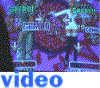

W E B S I T E S
Khinsider.com
- You can download every video game OST known to man probably.oldgamesdownload.com
- Remember that cd-rom game you played when you were a kid? This website collects old cd-rom games (including the obscure kind) and lets you download them. I got to play Barbie Fashion show again. (Download at your own risk)webdesignmuseum.org
- This website shows the varying stages of famous websites from the late 90s to modern times./webmaster/
- I'm a fucking webmaster.Yume 2kki Online
- You can play Yume 2kki in your browser. Other players can explore with you as well! Invite your friends.Bitview
- Nostalgic for old youtube? Re-experience the beginnings of classic youtube. R E C R O O M
R E C R O O M
Hypnospace Outlaw
- "The year is 1999." A game based entirely off the old web during Y2K.YUME NIKKI
- A surreal walking simulator based on dreams. It's free on steam.BROKEN REALITY
- Another game based off y2k nostalgia. Very nice gameplay and vibes to it. Good music too.FFXIV
- Did you know that the critically acclaimed MMORPG Final Fantasy XIV has a free trial, and includes the entirety of A Realm Reborn AND the award-winning Heavensward expansion up to level 60 with no restrictions on playtime? Sign up, and enjoy Eorzea today!Mother 3 Fan Translation
- A fan translation widely accepted by die-hard fans. You'll have to get a GBA emulator and Mother 3 ROM to play it but you'll have to find it yourself. (or if you email me, I can send you one myself. PLEASE PLAY MOTHER 3.) V I D E O V A U L T
V I D E O V A U L T
 EARLY 2000s VIDs
EARLY 2000s VIDs Leek Spin - Leek Spin
Levan Polkka - leek spin part 2
Cartoon Heroes (Speedy Mix) - Barbie Young -DDR Version- - you know this song, come on
nyan cat - this little fucker became an NFT, so heres a download
Trance - 009 Sound System Dreamscape - Most heard this on tutorial videos with notepad and unregistered hypercam2 watermarks
☆ゲッダン☆ - GET. DOWN.
Caipirinha (Original dance) - Tomoe from Azumanga Daioh wagging her finger. A meme from 2008
White Letter / Hatsune Miku - A Classic vocaloid song
Kasane Teto - Teto territory - Self Explanitory
Kasane Teto - Popipo - The best version IMO
Lucky Star - Konata Kirby Remix - circa 2009 BUEH
もうTetrisしかないじゃない - being meguka is suffering.
スーパーマリオでウエスタンショー - Super Mario parody animation by the guy that sings the Nichijou songs
Angry German Kid-Po Pi Po - This german kid is Angry yet, he sings his heart out
All The Things The Sailor Soldiers Said AMV - An AMV of someones OCs based off Sailor Moon, with a Russian cover of the song "All the things she said" by TATu (what a mouthful.)
Cat and Dog Ringtone - A cute dog and cat ringtone that will move you to tears.
"Skittles" AMV! - A classic Haruhi Suzumiya AMV
Anna Blue - So Alone - A very serious MV about an emo girl who is so lonely and so sad
 MUSIC VIDEOS
MUSIC VIDEOS Delta Heavy - Ghost - clippy has had ENOUGH (GOD this video feels so relevant)
Yukkonkon【Nichijou×concon】 - Nichijou YTPMV that's really catchy part 1
LOVE M.M.Y - Nichijou YTPMV that's really catchy part 2
ATOLS - Wonderland feat. Hatsune Miku - a video that seemed to be generated with a 3d scanned environment. It's so pretty and miku sounds so ethereal
Allergic to People - A very epic animation by Twisted-Doctor
Bad Apple!! but it's made of YouTube captions - Pretty neat.
NUMINOUS - A 60fps AMV that does frame interpolation correctly (and is beautiful)
YOU FUCKERS WERE ASKING FOR THIS ONE - An AMV that makes me feel things
Octave Minds - Projectionist/Tap Dance - this AMV has gotten me to cry
user-999 - Dream Land (End of Intermission) - this AMV is so dreamy, and ethereal...
2e7en - apurplerosefor.her - this AMV inspires me, its very grim though
Siktransit- Touchy - I can't be the only person who's watched this, please tell me if you did
Pictured as Perfect - A song by Frums coupled with a cool animation (Flash warning)
 WEIRD GAMES
WEIRD GAMES The Museum of Anything Goes - A very old and rare cd-rom game that has surreal contents in it. Vinny Vinesauce does a playthrough
3 day Eventing - A bizarre 3d horse game I played as a kid
Space Funeral - A shortish RPG Maker 2003 game with original graphics, a soundtrack of creaky vintage electronica and obscure Japanese noiserock, and lots of blood. The story will surprise you. It's amazing.
LISA THE FIRST - (Content Warning) An exploration game about a girl named Lisa, who is battling her psyche plagued with the pain and horror done by her father.
HYLICS - Hylics is a widely revered, surrealistic stop motion style JRPG game.
Toilet in Wonderland - Toilet in Wonderland is an adventure game where a constipated girl named Mira explores a toilet-filled Wonderland inhabited with many wacky characters. It's a thoroughly entertaining experience and does not take itself seriously at all.
DOME KING CABBAGE - At the moment, it is still in development but just click the link. You will not regret what you'll hear and see.
 OLD ANIME STUFF
OLD ANIME STUFF only one no.1 - Original Di Gi Charat OP. A BANGER.
Di Gi Charat Nyo Opening 2 - It slaps, and I can never not sing along
Dejiko GAMERZ Commercial - For a brief period, Dejiko had red eyes for some reason.
SUPER GALS OP - I watched the shit out of this anime. Its about a gyaru
Petite Princess Yucie Opening - Magical Girl anime that Hideaki Anno of all people worked on.
俺たちに翼はないOP - A visual novel opening to a game I've never played
Steel Angel Kurumi Season 2 Opening - This was a cute anime I used to watch but I also remember it being really gay
Azumanga Daioh ED - Ahh, takes me back to 5th grade... I loved this show
Princess Tutu OP - Another nostalgic opening. I think its so pretty still
DN Angel - REMEMBER THIS FUCKING ANIME? it was so freaking weird and full of plot holes. it seemed like they winged the entire story...
VENUS VS VIRUS - Ok this OP song did not need to go so hard... also Miku is in this anime
This Ugly yet Beautiful World - I don't even know what happened in this anime but it was my first anime where I was exposed to boobies and it was on anime network TV lmao
Elfen Lied OP - Another anime that needlessly exposed me to gore and nudity as a child, god I was too scared to finish this show.
Paranoia Agent OP - This anime came on toonami/adult swim and it would scare me so much but it's a genuinely interesting show, I actually love it now, the OP is so grim though.. It gives me a sick feeling. I LOVE IT.
 EERIE STUFF
EERIE STUFF The Perversion Artist - (Content Warning) A video about the artist Aleksandra Waliszewska whos art work is haunting and nightmarish.
Jessie Roestenberg, 1954 - A case of a woman describing her experience seeing a UFO. This case is widely considered to be factual and not a hoax.
UAP acceleration - August 16, 2020 - Another compelling UFO sighting that is not considered a hoax.
Creepy sounds in the Smokey Mountains - Most likely an wild elk noise but its defintely eerie
 MISC
PUPARIA - A mesmerizing animation by Shingo Tamagawa
Birds Like Us - A new 3d animated film coming in 2021, with very questionable quality. (I can't look away.)
If I Apologised ~ MirrorMask - A song that sounds straight from Silent Hill 2 but isn't
Dot Animation of Hatsune Miku - Romantic Love - An animation to the famous Parappa song
Residual Fools - A distressing and chaotic vocaloid song
Tek vs Jade - Dojo Duel - A really fucking well animated stick fight. So underrated.
I'll be adding another section here later. See you then....